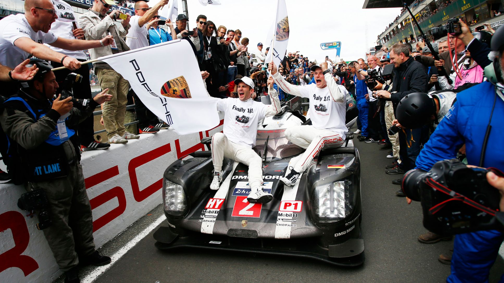
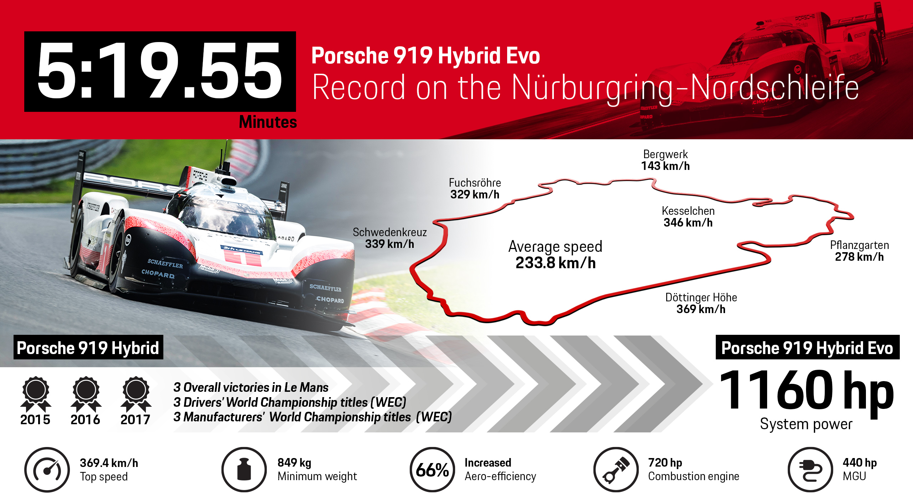
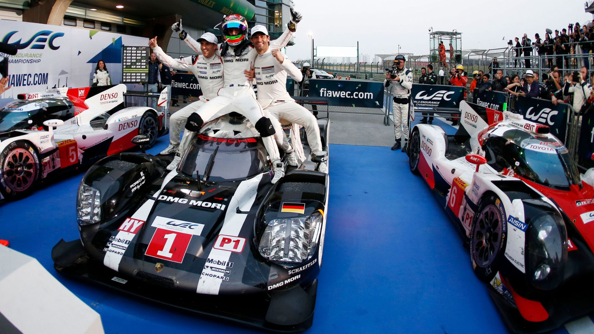
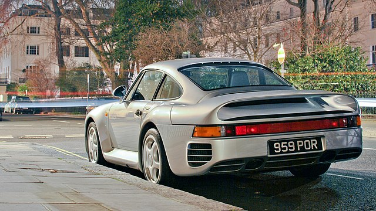
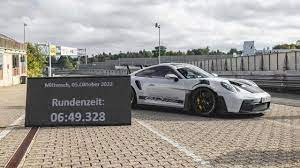
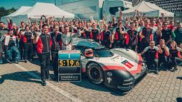

Porsche Records
Porsche, known for its exceptional engineering and racing heritage, has set numerous records in the automotive industry.
Some of Porsche's notable records:
-  Winner of the 24 Hours of Le Mans multiple times.
-  Setting the fastest lap record at the Nürburgring Nordschleife.
-  Most victories in the FIA World Endurance Championship.
-  Record for the fastest production car at the time with the Porsche 959.
-  Setting speed records at various circuits around the world.
-  Record for the fastest track run during testing sessions.